The problem Joint-embedding predictive architectures (JEPAs) learn world models directly in latent space, but unconstrained autoregressive predictors may contract the latent distribution over long rollouts. This contraction is a form of collapse, and it is a problem because each prediction is fed back as the next input: even a slight per-step contraction compounds over the horizon, progressively shrinking the latent distribution until distinct states can no longer be told apart.
The method We introduce Symplectic Hamiltonian JEPA (LeHami), which replaces the standard predictor with an action-conditioned Hamiltonian flow over a structured latent state (q, p) integrated using an exactly symplectic leapfrog step. We obtain the momentum-like component from temporal derivatives of the learned position-like representation, providing an explicit second-order state for prediction and control. The idea comes from physics, where Hamiltonian mechanics governs dynamics through a single scalar H and preserves phase-space volume at every step. Machine-learning methods have since learned the Hamiltonian from data, such as Hamiltonian Neural Networks (Greydanus et al., 2019), Symplectic Recurrent Neural Networks (Chen et al., 2019) and Hamiltonian Generative Networks (Toth et al., 2019). LeHami brings this line of work into JEPA world models learned from video under actions, to address one of their failures: the collapse of long rollouts.
The guarantee Because the leapfrog step is symplectic, this construction preserves phase-space volume at every rollout step as a consequence. This tackles the problem of collapse directly: it rules out uniform contraction, asymptotically stable fixed points, and merging of distinct latent states, independently of the learned parameters or action sequence. The guarantee holds over the whole latent space, while the data lie on a thin surface inside it, so we also measure collapse on the data.
The results We measure rollout collapse on the data, with four ratios of the rollout to the truth, on five environments learned from pixels: conservative and actuated pendulums, a mass-spring, a two-body system and a cart pole. With the encoder and latent state held fixed, an MLP and a transformer predictor contract the rollout on every environment, while LeHami's rollouts do not merge. LeHami is the most accurate of the three at long horizons, in position on four of the five environments and in velocity on three, while at short horizons the free predictors are more accurate on two of the five. The learned flow also integrates at unseen sub-frame step sizes and, run backward with the recorded actions, recovers earlier frames as well as it predicts later ones. LeWM (Maes et al., 2026), with a richer three-frame encoder of its own, is more accurate on four of the five, which suggests incorporating a richer encoder within LeHami in future work. These results show how geometric structure can provide inference-time guarantees that are complementary to representation regularization in latent world models.
- Symplectic latent world model (LeHami): We introduce an end-to-end trainable JEPA framework equipped with a learned separable Hamiltonian predictor over a canonical latent split (q, p). We prove that its volume-preserving step eliminates three specific collapse modes during evaluation rollouts across arbitrary horizons and actions.
- Rollout collapse, measured on the data: To our knowledge, this is one of the first works to show rollout collapse in JEPA world models with measures taken on the data. With the encoder and latent state fixed, an MLP and a transformer predictor contract the rollout on all five environments and four measures, while LeHami's rollouts do not merge.
- Continuous-time & invertibility: We show that a single trained predictor Hφ acts as a continuous vector field, enabling sub-frame time integration without performance degradation, and that run backward with the recorded actions it recovers earlier frames as well as it predicts later ones.
- Complete physics representation & principled planning: By construction rather than by architectural tuning, LeHami represents the full state through exact geometric structure. Across five environments, LeHami is the most accurate of the same-state predictors at long horizons in position on four of five and in velocity on three of five (the pendulums and the mass-spring), and beats chance in both on all five. It can also be used for planning, with the limits we report.
The idea, from the intuition
Think of a pendulum. Its angle alone does not tell you what happens next: you also need how fast it is swinging. Physics bundles the two into a phase space, a position-like coordinate q and a momentum-like coordinate p, and the motion is a flow through that space generated by a single scalar H. What matters for us is not that this flow conserves something, but that it is symplectic: it preserves the oriented area spanned in each (q, p) plane, and with it phase-space volume at every step. A cloud of states can be stretched, rotated and sheared, and squeezed in some directions only if it is stretched in others: its total volume never shrinks. Crucially, this persists under actuation, provided the action enters the Hamiltonian.
A predictor without structure takes a latent state and evolves it to the next state. It is trained on short clips and then rolled out far beyond them, each prediction fed back as the next input. Nothing stops that network from squeezing the latent space a little at every step: a contraction of 0.99 per step is barely visible in training (0.998 ≈ 0.92) and collapses a long rollout (0.9950 ≈ 0.6). Distinct states can then move together until they are hard to tell apart.
LeHami gives the latent space a symplectic phase-space structure directly. The encoder maps each frame to a point (q, p), and the predictor is a learned Hamiltonian Hφ(q, p, u) = Tφ(p) + Vφ(q, u), where u is the control action vector (for the pendulum, the applied torque), advanced by a leapfrog step. The action enters through the potential, so a torque literally tilts the energy landscape the state moves on.
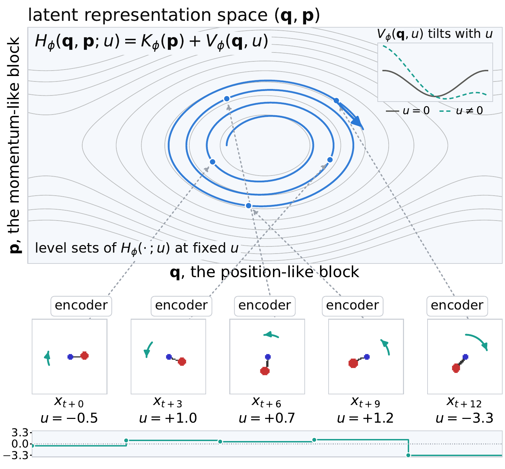
The diagram shows how the actions move the state across levels. In the conservative case, a trajectory stays on one level set of Hφ (the grey lines). With actuation, the action ut enters the potential, so at every step the symplectic update follows the level sets of the Hamiltonian defined by the current action. The action therefore selects which level set the state moves along, and a sequence of actions carries the state from level to level, tracing the rollout (the blue curve in the upper left of the diagram). Volume preservation is a property of each step, not of a particular level, so it survives the change of level for every action sequence, provided ut is held constant within a step.
Three consequences of the structure
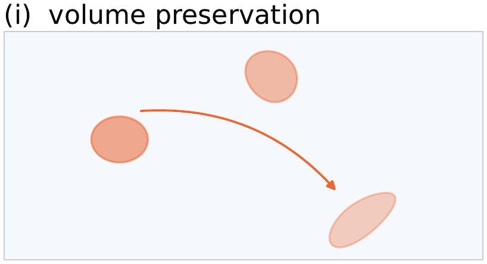
1 · Exact volume preservation
Symplectic integration preserves phase-space volume by construction, provably eliminating some representation collapse modes during evaluation rollouts for arbitrary action sequences.
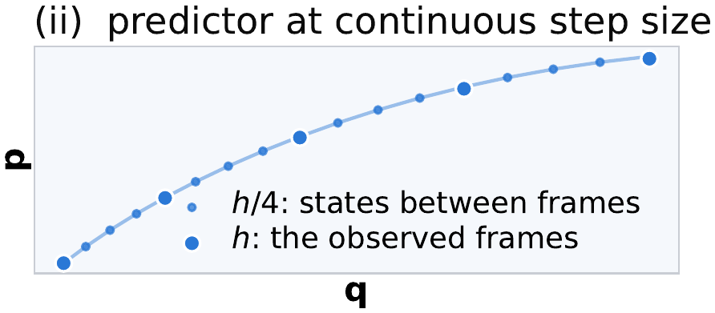
2 · Continuous-time step size
Because Hφ parameterizes a continuous vector field, a single trained model can be integrated at arbitrary step sizes Δt without retraining, facilitating training on multi-frequency data and non-uniform planning grids.
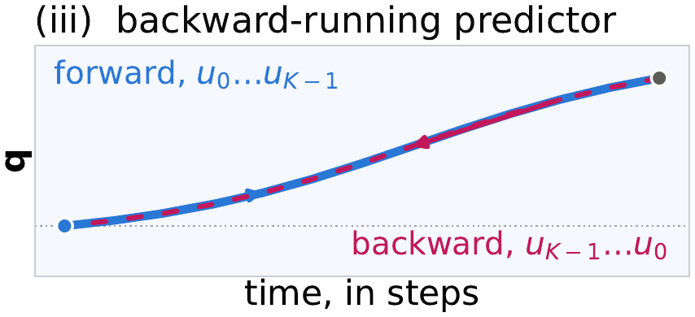
3 · Invertibility given the action history
Flipping the step (Δt → −Δt) and replaying the actions in reverse order allows backward-in-time rollouts, serving as an essential primitive for computing backward reachable tubes and online safety guarantees in optimal control.
A learned energy that tracks the real one (the conservative case)
This is the special case of a conservative system, with no actuation (u = 0). Under actuation the controller does work and Hφ is no longer constant, although the step stays symplectic. In the conservative case the learned Hφ is not a physical energy: it is learned from pixels alone, with no energy supervision, so its offset and scale are arbitrary (the values below sit around −60). It is nevertheless conserved along the rollout, and the level it sits at orders the episodes the way the true energy does. Each of the four pendulums below swings with a different energy; the learned Hφ of each is almost constant over 96 rollout steps.
The relation between the two is monotone but not linear: in the bottom-right panel the points bend and scatter around the trend, and the correlation of 0.98 measures how well they follow it, not that they lie on a line. This is expected, because any increasing function of a conserved quantity is itself conserved, so Hφ is only identified up to such a reparametrization.
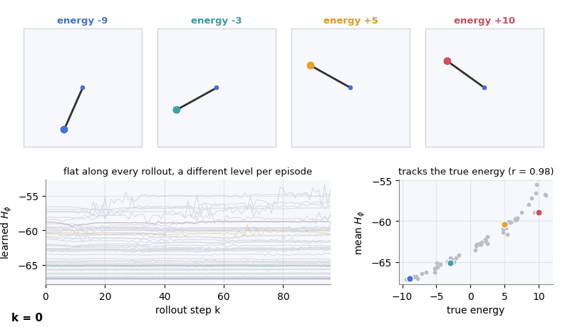
Architecture
We train on unannotated trajectories of observations [x0, …, xT−1] and actions [u0, …, uT−1]. LeHami has two learned components, an encoder Encθ and a Hamiltonian flow (Ham flowφ) that replaces the predictor, joined by the zero-parameter Savitzky–Golay (SG) stencil that reads the momentum off the encoder trajectory:
Hamiltonian flow: (q̃t+1, p̃t+1) = Ham flowφ(qt, pt, ut)
where W(t) is a window of W+1 frames that includes xt. The flow advances the state by one step of Hamilton's equations for a learned scalar Hφ(q, p, u), and θ and φ are trained end-to-end by backpropagating through the rollout, so the encoder is shaped to produce latent states that admit this structured evolution.
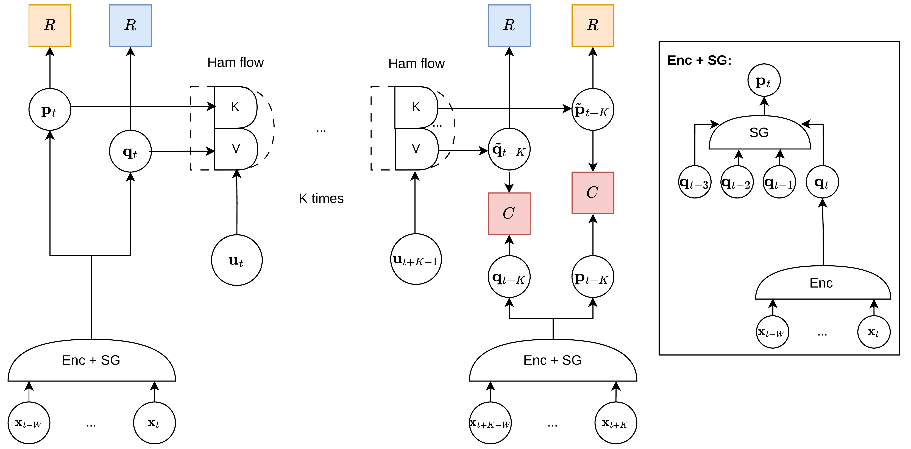
The integration. We leverage the leapfrog (Störmer–Verlet) integrator, which is second-order accurate and, crucially, exactly symplectic. For a separable Hamiltonian Hφ(q, p, u) = Tφ(S−1p) + Vφ(q, u), with S = diag(eσ), the update over a time step Δt is
q̃t+1 = qt + Δt S−1 ∇Tφ(S−1p̃t+½)
p̃t+1 = p̃t+½ − (Δt/2) ∇qVφ(q̃t+1, ut)
where σ is learned and absorbs the relative scale of q and p, which the self-supervised objective leaves undetermined. Because S is a constant linear rescaling, the flow remains exactly symplectic.
The guarantee is not specific to separable H: for a non-separable Hamiltonian, exact symplecticity is retained by replacing leapfrog with a non-separable symplectic integrator.
Action-conditioned Hamiltonian. Under actuation the controller does work and Hφ is no longer constant, but symplecticity is a property of the map. We condition the potential on the action so Vφ = Vφ(q, u) and the generalized force F(q, u) = −∂Vφ/∂q is a q-gradient for every action by construction. Separability is untouched and the leapfrog stays exactly symplectic for every action sequence, provided only that ut is constant within a step.
How p is obtained. We enforce the canonical relation p = dq/dt by computing p as the temporal derivative of the generalized coordinates q via a fixed Savitzky–Golay stencil on the encoder trajectory: a least-squares quadratic fit over q that is then differentiated at time step t. The stencil is linear with constant coefficients, so it adds no learned parameters and cannot itself collapse. Computing p as dq/dt assumes unit mass. A mass that is constant within an episode, possibly different between episodes, is absorbed by the encoder through a stretched coordinate; a mass that depends on the configuration is not, and the cart pole tests that case.
Multi-step learning. We consider multi-step prediction over a K-step horizon by iteratively applying the Hamiltonian flow. The loss is the average MSE across the trajectory. Given an anchor of A time steps used to form the embedding of the first time step of the episode, and K self-fed leapfrog steps, the loss is
where the first term is the prediction loss in the position-like embedding, the second is the prediction loss in the momentum-like embedding weighted by λp, and the last term S is the regularizer, which, in principle, can be any (e.g., SIGReg) and it can be applied to q and p independently, to only q, or to both concatenated. It acts on ground-truth embeddings, never on the rollout.
Empirical validation of LeHami
We evaluate our approach on five environments rendered as 64×64 RGB images. In the conservative pendulum there is no actuation, and episodes vary across three rod lengths. In the actuated pendulum, a recorded sequence of scalar torques (ut)t, drawn uniformly, does work on the system, so energy is no longer conserved; episodes vary across the same three rod lengths and three masses, since under actuation the mass sets the response to the torque. In both pendulums the true dynamics preserve phase-space volume, which is the property LeHami builds in; the actuated pendulum tests it once energy conservation no longer holds.
To test beyond the pendulum, we add the mass-spring and the two-body system of the DeepMind Hamiltonian Dynamics Suite, and a cart pole with Gymnasium's physics and no force. The cart pole has two degrees of freedom and a mass that depends on the pole angle, so it breaks the unit-mass assumption.
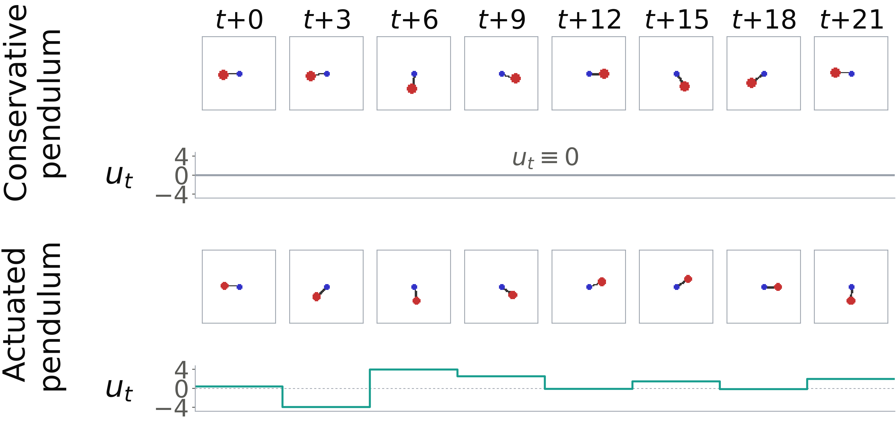
Same-state controls. To separate the Hamiltonian step from the augmented state, we keep LeHami's encoder, state [q, SG(q)], losses, regularizer and 8-step training rollout, and replace only the predictor: by an MLP with the same number of parameters as LeHami's flow, and by the transformer of LeWM (Maes et al., 2026). LeWM with its own state, from one frame or three, is compared as well. Results are over three training seeds, next to two baselines that use no model: repeat the start, and predict the mean.
Results
Rollout collapse, measured on the data
The guarantee holds over the whole latent space, for any learned Hφ, trained or random. The data, however, lie on a thin surface inside it, with as many dimensions as the physical state, and a map that keeps the total volume could still squeeze that surface while stretching other directions. We therefore measure collapse on the data, with four ratios of the rollout to the truth (the encoder's latents of the true frames at the same step). Each is 1 when the rollout keeps the true geometry and below 1 when it contracts: the distance between rollouts started from different frames; the tangent area, how much the rollout stretches a small patch of the data surface compared with the true motion; the spread of the cloud of all rollout states; and its effective rank.
| Predictor | Cons. pendulum | Act. pendulum | Mass-spring | Two-body | Cart pole |
|---|---|---|---|---|---|
| LeHami | 1.03 / 1.35 / 1.04 / 1.25 | 1.00 / 1.04 / 1.01 / 1.21 | 1.10 / 1.22 / 1.15 / 1.57 | 1.50 / 0.94 / 1.59 / 0.83 | 1.33 / 0.58 / 1.42 / 0.94 |
| MLP, matched | 0.81 / 0.49 / 0.78 / 0.56 | 0.91 / 0.68 / 0.90 / 0.84 | 0.73 / 0.17 / 0.70 / 0.37 | 0.85 / 0.75 / 0.85 / 0.94 | 0.72 / 0.22 / 0.71 / 0.56 |
| Transformer (LeWM's) | 0.86 / 0.62 / 0.83 / 0.70 | 0.92 / 0.81 / 0.90 / 0.90 | 0.83 / 0.37 / 0.80 / 0.59 | 0.84 / 0.76 / 0.84 / 0.95 | 0.63 / 0.20 / 0.64 / 0.61 |
Rollout collapse on the data, at the longest step. Each cell gives four ratios of the rollout to the truth: distance between rollouts / tangent area / spread / effective rank; 1 is right, below 1 the rollout contracts, above 1 it drifts. Mean over three seeds (largest s.d. 0.17). Steps K: 30 for the pendulums, 50 for the mass-spring, 70 for two-body and the cart pole.
Both free predictors contract the rollout on every environment and on all four measures. LeHami's rollouts never merge, but they are not exact: past the 8 trained steps they drift (values above 1), and on two-body and the cart pole they squeeze some directions while stretching others, keeping the total volume; their distance and spread stay above 1 there, so the rollouts move apart, not together. On the cart pole (tangent area 0.58) the mass depends on the pole angle, so p = dq/dt is not the true momentum and the true motion does not keep volume in LeHami's coordinates, which a volume-preserving step cannot follow.
The gain needs the symplectic step. With the same T + V and an explicit Euler step, on the conservative pendulum the rollouts expand (distance 1.71) and the angle error reaches chance by K = 30 (1.29 against 0.46 rad).
Long-horizon prediction
On the conservative pendulum we compare LeHami with the two predictors given the same state, so only the step differs. From K ≈ 20 on they are no better than chance, while LeHami stays below it in angle up to K = 70; the right panel shows their rollouts contract. LeWM on its own state does not contract, yet its error also grows: its predictions keep the true spread but lose track of the true state.
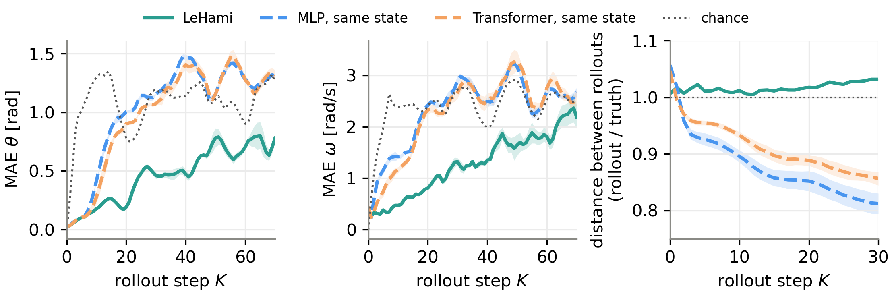
Five environments. Given the same state, LeHami is the most accurate of the three predictors in position on four of five, and beats both baselines in position everywhere. In velocity, LeHami is the most accurate on the pendulums and the mass-spring; on two-body and the cart pole the free predictors are as accurate or better.
| Environment | LeHami | MLP, matched | Transformer (LeWM's) | Repeat the start | Predict the mean | |
|---|---|---|---|---|---|---|
| Cons. pendulum | position | 0.779 ± 0.034 | 1.310 ± 0.015 | 1.313 ± 0.046 | 1.259 | 1.324 |
| velocity | 2.185 ± 0.227 | 2.672 ± 0.085 | 2.566 ± 0.144 | 2.741 | 2.499 | |
| Act. pendulum | position | 0.908 ± 0.067 | 1.073 ± 0.027 | 1.076 ± 0.015 | 1.186 | 1.168 |
| velocity | 2.280 ± 0.206 | 2.721 ± 0.033 | 2.801 ± 0.086 | 3.222 | 2.541 | |
| Mass-spring | position | 0.074 ± 0.016 | 0.223 ± 0.005 | 0.164 ± 0.018 | 0.422 | 0.336 |
| velocity | 0.086 ± 0.009 | 0.254 ± 0.004 | 0.201 ± 0.019 | 0.436 | 0.347 | |
| Two-body | position | 0.421 ± 0.047 | 0.148 ± 0.073 | 0.183 ± 0.037 | 2.502 | 1.456 |
| velocity | 0.112 ± 0.013 | 0.056 ± 0.034 | 0.062 ± 0.019 | 0.688 | 0.423 | |
| Cart pole | position | 1.041 ± 0.098 | 1.190 ± 0.093 | 1.104 ± 0.081 | 2.276 | 1.285 |
| velocity | 2.314 ± 0.192 | 2.140 ± 0.101 | 2.248 ± 0.299 | 3.778 | 2.409 |
Physical prediction at the longest step, five environments. MAE of the position and the velocity read from the rollout by the 25-NN probe, mean ± s.d. over three seeds. Pendulums: θ [rad], ω [rad/s], K = 70. Mass-spring: q, p, K = 50. Two-body: position and velocity of a body, K = 70. Cart pole: φ [rad], dφ/dt [rad/s], K = 70. Bold: lowest of the three predictors given the same state. The last two columns use no model.
Where it falls short. LeWM with a three-frame state, fully learned, is more accurate on four of five; combining it with a predictor that does not collapse is natural follow-up work. The gain depends on the horizon: at K = 10 the free predictors are more accurate on the actuated pendulum (angle 0.20 and 0.26 against 0.32 rad) and the cart pole. Two-body is shown at 0.2 s per frame; at the suite's 0.05 s per frame LeHami fails, since its 8 training steps cover 1 to 6 % of an orbit, too little to learn the force.
LeHami is a world model with time re-stepping and invertibility
LeHami runs at any rate, and in either direction, because Hφ is a continuous-time vector field. We showcase this capability by holding the learned Hφ fixed and integrating it at sΔt, taking 1/s sub-steps per observed frame, and compare against a Runge–Kutta integration of the true ODE from the same initial condition. Refining below the observation rate leaves the predicted trajectory invariant (left); coarsening breaks it, as an explicit symplectic integrator leaves its stability band.
The same structure makes the step invertible given the action history: running it with Δt → −Δt and the recorded actions in reverse order undoes the rollout for any learned Hφ, which we check in floating point as an implementation test (round-trip error below 10−4 % after 30 steps). What depends on the learned Hφ is whether the backward rollout lands on the true past. From a mid-episode frame of a held-out episode, we run the step backward with the actions that drove the earlier frames, and score it against the true earlier frames (right). On both pendulums the backward rollout recovers the earlier angles as well as the forward one predicts the later ones, and both stay well below chance up to 20 steps, under actuation too. A free predictor has no backward step.
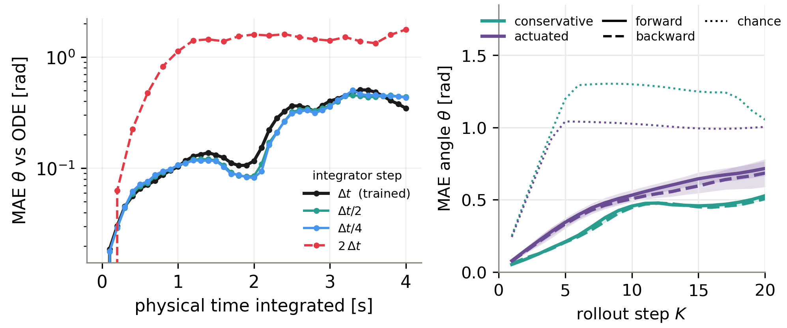
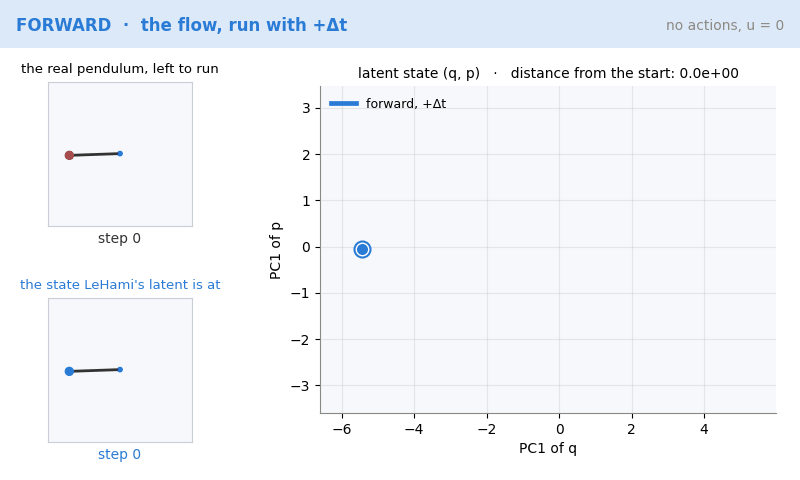
LeHami can be used for planning
We plan at inference time by searching for an action sequence that brings the latent prediction at the horizon to the latent of a goal frame, using the cross-entropy method with model-predictive control. Goals are 30 steps ahead and contain a position clause, a velocity clause, or both. The budget is capped at 15 TFLOP per episode, so each model trades the cost of one solve against how often it replans. LeHami's predictor is cheaper per step, so within the budget it can replan more often. It does not yet reach goals better: LeWM has the highest success on every clause, from one frame on the angle and from three frames with an untied kernel on the velocity and on both. Planning backward from the goal could help close this gap.
Both models decode the rod's mass and length along the whole rollout, so differences in planning do not come from failed system identification. What differs is how velocity enters the latent:
- LeWM, one frame (W=1): the per-frame goal embedding carries no velocity, so it fails the velocity clause.
- LeWM, window with tied weights: captures speed but is blind to direction, since it maps ±ω to the same latent. 92 % of the goals need the correct sign.
- LeWM, window with untied weights: breaks time symmetry, captures signed velocity and reaches the highest success, at a high cost per solve that forces it to replan less often.
- LeHami: signed velocity is guaranteed by the structure, since p is read off the encoder trajectory with no extra parameters, and the Hamiltonian flow has 2.23M parameters against 3.31M for LeWM's transformer and projection.
| Clause | Model | Success | TFLOP | Replanning |
|---|---|---|---|---|
| Position | LeWM W=1 | 0.800 ± 0.019 | 12.87 | R=9, 4 solves |
| LeWM W=3 (tied) | 0.633 ± 0.020 | 13.65 | R=9, 4 solves | |
| LeWM W=3 (untied) | 0.696 ± 0.016 | 13.65 | R=9, 4 solves | |
| LeHami | 0.480 ± 0.084 | 8.05 | R=9, 4 solves | |
| Velocity | LeWM W=1 | 0.184 ± 0.027 | 8.78 | R=15, 2 solves |
| LeWM W=3 (tied) | 0.473 ± 0.014 | 13.65 | R=9, 4 solves | |
| LeWM W=3 (untied) | 0.800 ± 0.058 | 13.65 | R=9, 4 solves | |
| LeHami | 0.527 ± 0.019 | 10.98 | R=6, 5 solves | |
| Position and velocity | LeWM W=1 | 0.142 ± 0.033 | 12.87 | R=9, 4 solves |
| LeWM W=3 (tied) | 0.400 ± 0.037 | 9.31 | R=15, 2 solves | |
| LeWM W=3 (untied) | 0.636 ± 0.025 | 13.65 | R=9, 4 solves | |
| LeHami | 0.304 ± 0.088 | 10.98 | R=6, 5 solves |
Goal-reaching success on the actuated pendulum, by clause: best success probability per model at a matched budget of at most 15 TFLOP per episode, mean ± s.d. over three model seeds. The success of a do-nothing policy (u = 0) is 0.060, 0.240 and 0.040 on the three clauses. Bold numbers mark the best model within a clause. R is the number of steps executed before replanning.
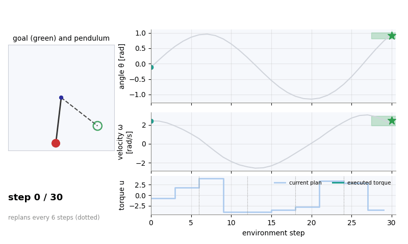
Conclusion
We introduced LeHami, a predictor for latent world models whose exact symplectic step preserves volume, which provably eliminates some rollout collapse modes, and integrates in continuous time, invertibly given the action history. On five environments and four measures taken on the data, with the same encoder and state, an MLP and a transformer predictor contract long rollouts while LeHami's do not merge, and LeHami is the most accurate of the three in position at long horizons on four of five, but not at short horizons on two of five. Run backward with the recorded actions, it recovers the true past.
Limitations and future work. First, strongly dissipative systems (e.g., heavy friction) contract phase-space volume, which a volume-preserving step cannot follow; port-Hamiltonian extensions are a natural direction for future work. Our experiments use simulated video of physical systems; extending them to contact, real video, observation noise, encoder error and complex actuation (e.g., LeWM's Push-T) is the next step. Second, our Hφ is separable with a mass that is constant within an episode; on the cart pole, whose mass depends on the configuration, LeHami is less exact, and on two-body at the suite's 0.05 s per frame it fails. Third, the volume guarantee does not bound the error, and planning does not beat LeWM yet. Finally, a learned momentum could combine a richer encoder's accuracy with rollouts that do not collapse.
Code and reproducing the paper
The repository contains the model, training and evaluation code, the dataset generators and one script
per block of the paper. The figures and tables are produced by the notebooks in paper_figures/ from the
frozen numbers in paper_figures/data/.
git clone https://github.com/rominay/LeHami
cd LeHami
uv sync
uv run pytest lehami/tests/
bash lehami/experiments/conservative_multi_rod.shgithub.com/rominay/LeHami · released under the Apache License 2.0.
Citation
@misc{yalovetzky2026lehami,
title = {LeHami: Symplectic Latent Dynamics Toward Long-Horizon Rollouts in World Models},
author = {Yalovetzky, Romina and Balestriero, Randall and LeCun, Yann},
year = {2026},
eprint = {2610.15267},
archivePrefix = {arXiv},
url = {https://arxiv.org/abs/2610.15267}
}